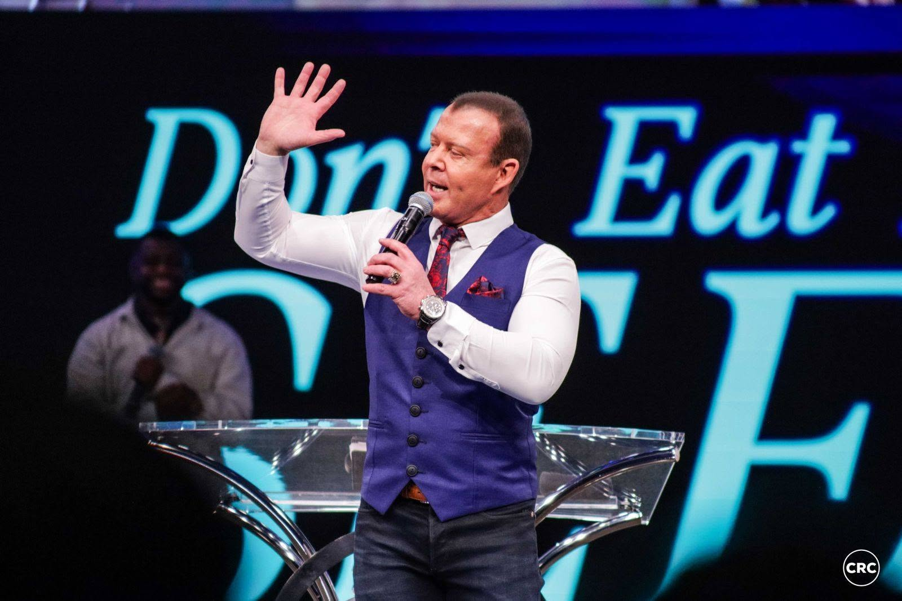

Where It All Began
Christian Revival Church was founded by Pastor At Boshoff with a single, burning conviction: that the local church is the hope of the world. What started as one congregation grew into a family of churches spanning South Africa and beyond, each one rooted in the same vision: building one church in many locations.
The heart of CRC has never changed. It is a church that goes after people: the lost, the broken, the searching. A church that believes love is not just a feeling but a force that can invade communities and change them from the inside out.
CRC Malmesbury carries that same DNA into the Swartland. We are not just another church in Malmesbury. We are part of a wave of love that is touching cities across the nation, and we believe the best is still ahead.
“We are building one church in many locations, a church that wins the lost at any cost, mends the nets, and releases every member for ministry.”
Mission, Vision & Values
To win the lost at any cost.
This is not a slogan. It is a way of life. We exist to reach people who are far from God and bring them into a living relationship with Jesus Christ. Every service, every homecell, every act of kindness is an expression of this mission.
Building one church in many locations.
We are not a collection of independent congregations. We are one church, expressed in many cities and communities. CRC Malmesbury is one expression of that vision in the Swartland, connected to a global family that believes together we do more.
Fuelled by the love of God.
Love is not one of our values. It is the engine of everything we do. We train and release every member for ministry, care for our community, evangelise the lost, and disciple those who believe. An outreach into new territory, every single week.
“A new command I give you: Love one another. As I have loved you, so you must love one another. By this everyone will know that you are my disciples, if you love one another.”

Pastor At Boshoff
Senior Pastor & Founder, Christian Revival Church
Pastor At Boshoff is the founding senior pastor of Christian Revival Church and the central voice of the CRC movement. His life’s mission is simple and uncompromising: to win the lost at any cost. Under his leadership, CRC has grown from a single congregation into a family of churches planted across South Africa and internationally.
Pastor At’s teaching is bold, practical, and always anchored in Scripture. His mandate to mend the nets, train every member, and release them into ministry has shaped the DNA of every CRC campus, including Malmesbury. His vision of “one church in many locations” is not just an organisational strategy; it is a spiritual conviction that the local church, when it moves in unity, can change nations.
Every CRC campus, including Malmesbury, is an extension of that vision. We carry his mandate into our town with the same fire, the same love, and the same belief that the best is still ahead.
Pastor Wimpie Taute
Lead Pastor, CRC Malmesbury
[Short leadership bio placeholder — a few lines on his heart for the local church and community.]
The Heart Behind What We Do
The Bible
We believe the Bible is God's inspired Word — our final authority for faith, life, and truth.
Salvation
We believe salvation is a free gift through faith in Jesus Christ, available to all who call on His name.
The Church
We believe the Church is God's family on earth — one body, many locations, united in purpose.
Discipleship
We believe every believer is called to grow, serve, and make disciples who make disciples.
Join Us This Week
Morning Service
08:30
Evening Service
18:00
Join a Homecell
Tuesday and Wednesday evenings at 19h00